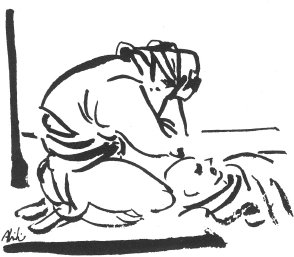

SARI AHMEDİN AĞIDI
Sarı Ahmet adında bir delikanlı, Andırından, nişanlısı bulunan Köleli köyüne giderken yolda eşkıyalar tarafından vuruluyor. Bu ölümü duyan nişanlısı, vurulduğu yere kadar gelerek başında bu ağıdı yakıyor. Bu ağıt, tahminen bundan 30 sene evvel söylenmiştir.
Gapıda da dor'at bağlı
O da orda dolanuyo
Öldürmüşler Sar'Ehmedi
Al ganlara beleniyo
Şu yiğidin yatışına
Gola martin dakışına
Furdu beni Sar'Ehmedim
Kölelinin yokuşuna
Gaplan geldi heğirmiye
Yaşı vardı yiğirmiye
Her ananın keri dağal
Böyle yiğit doğurmıya
Ağ damına verdim direk
Ganı atdım kürek kürek
Başgasını demem amma
Ehmet düğünlerde gerek
Dilli Sar'Ehmedim dilli
Ağ elleri deste güllü
Öldürmüşler Sar'Ehmedi
Zilfağarlı iki dinni
Ücede gaplan bağırır
Bahçada bilbil gığırır
Yekinsene Sar'Ehmedim
Anan başında çığırır
Gaynar gara gazan gaynar
Üzengisi dördilli oynar
Andırını sıcak deller
Bilmem Ehmet nerde yaylar
Süzün Sar'Ehmedim süzün
Gaşı kirpiğinden uzun
Ben anandan duyar idim
Güz gelse de gursak düğün
Damdırasın bir hoş çalar
Efesin bir yanna eğer
Cahalıdı Sar'Ehmedim
Gaş altından yarin değner
Atı gelir toza toza
Ben görmedim böyle gaza
Sar'Ehmedim yurd geziyo
Suyu souk otu teze
Atı da gelir harınan
Ehmet geliyo serinen
Heğbesini çok doldurdum
Milisi gökcek narınan
Gırat gelir harlıyarak
Nalı gelir parlıyarak
Sar'Ehmedim can veriyor
Siyah perçem terliyerek
Odamıza yer serdiğim
Telli çarşaflar örtdüğüm
Sarılsana Sar'Ehmedim
Küsüp de ayrı yatdığım
Otlu koyak otsuz koyak
Ağam da sağıdı bayak
Küfaylana binmez ıkan
Ben de geldim yalın ayak
Dor'at Doru at.
Sar'Ehmed Sarı Ahmet.
Dilli Konuşkan. Güzel konuşan kişi.
İki dinli İki yüzlü.
Gığırmak Kuş seslerine gığırmak denir. Ötmek.
Atın harla gelmesi Hızlı, harlayarak atın gelmesi.
Milisi gökçek nar Tanesi güzel nar.
Kırat gelir harlayarak Burnundan çok sesli soluk koyvererek.
Bayak Biraz önce.
